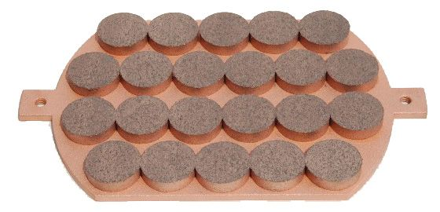
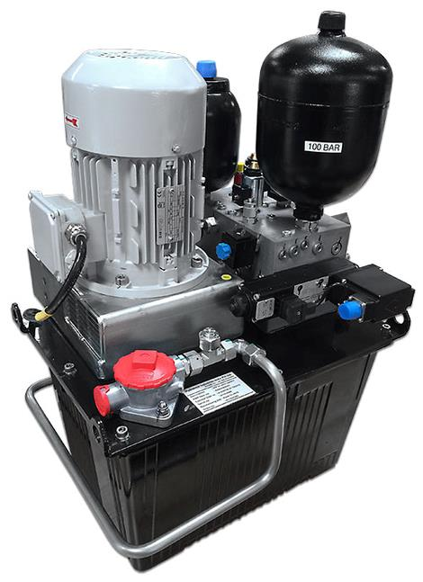

Le seguenti figure mostrano diversi tipici sistemi frenanti a disco.


La ripartizione può essere osservata nella figura seguente.

La figura seguente mostra una tipica scarpa freno.

La scarpa freno viene premuto contro il disco quando deve essere fissato, tramite un circuito idraulico.
I componenti di questo circuito sono descritti inSistema frenante. La figura seguente mostra unaesempio di soluzione industriale.
